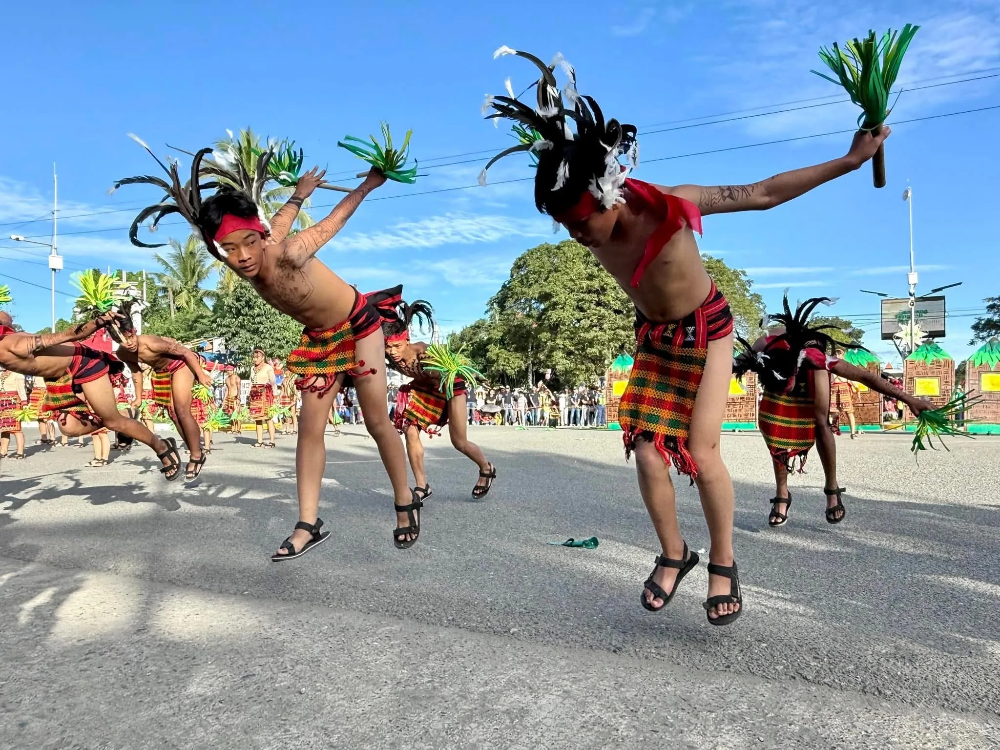
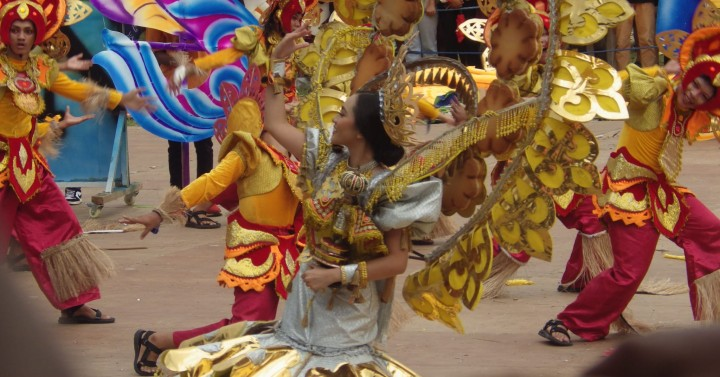

Kasuba-an Festival is a cultural celebration that highlights the importance of agriculture in the municipality of Lianga. It features street dancing performances inspired by farming activities and local crops such as rice and coconut. Participants wear costumes that represent harvest and rural life. The festival emphasizes the role of agriculture as the main source of livelihood in the community. It also promotes awareness of sustainable farming practices.
As a result of the community’s deep connection to farming, the festival serves as a thanksgiving for a successful harvest. The streets are filled with colorful displays and energetic performances. Locals and visitors gather to celebrate and appreciate agricultural traditions. Held every September 1, it coincides with the town’s founding anniversary. Through this celebration, Kasuba-an Festival strengthens unity and preserves cultural identity.


The festival was created to honor the agricultural roots of Lianga and recognize the contributions of local farmers. The term “Kasuba-an” reflects cultivation and growth, symbolizing the community’s connection to the land.
Over time, the festival developed into a major event that promotes tourism and local products. It continues to preserve traditional practices while adapting to modern influences, ensuring that agricultural heritage remains relevant.